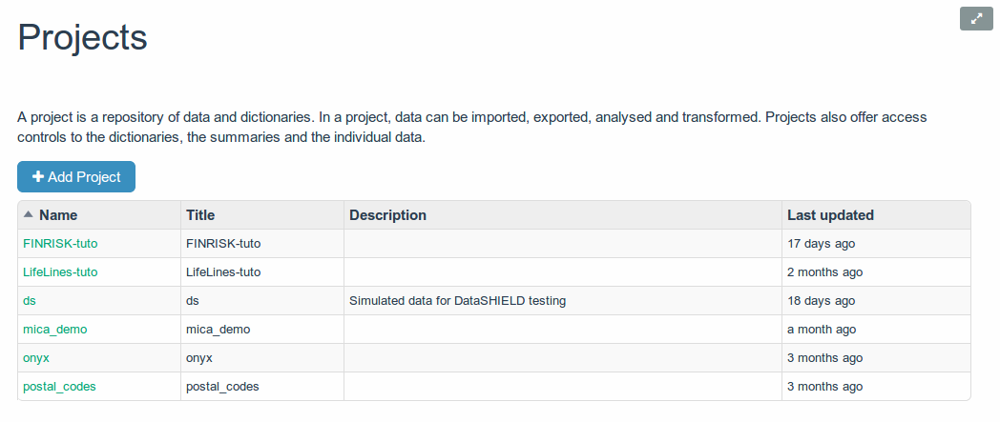
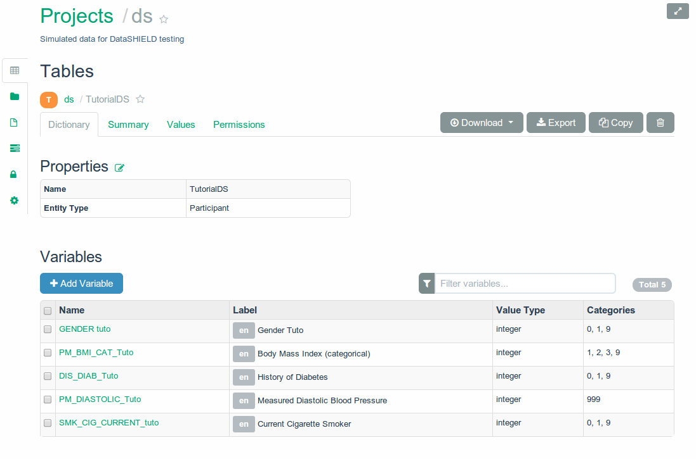

Opal
https://github.com/obiba/opal
Base de données
- Etudes épidémiologiques
- Biobanques
Collecte des données

|
|
Modèle
Projet (datasource)
Tables

Variables
Catégories et attributs
Données
Vue & variables dérivées
Diagramme ?
Confidentialité des participants

- ID internes
- Nouvelles ID pour chaque organisation qui accède aux données
Implementations des datasources
SQL
- BD existante
- Limité
Hibernate (EAV)

- Transactions
- Implementation complexe
MongoDB

- Pas de transactions
- Implementation ultra simple
- Scalable
Web Services
- Opal <--> Opal
- Import / Export
Fichiers
 |
 |
Import / Export
Architecture Clients / Serveur
- Serveur REST
- Client GWT
- Client Python
- Client R
Architecture Serveur
Package Debian
Jetty embarqué

Avant Spring Boot ;-)
Base de données document embarquée

API REST
- JAX RS (RestEasy)
- Protocol Buffers
- Documentation de l'API (Swagger)
Sécurité

|
|
Spatial realm
[{domain}:]{uri}:{action}:{parent-action}/{children-action}
Permission EDIT_TABLE
rest:/datasource/datasource_1/table/table_1:PUT:GET
rest:/datasource/datasource_1/table/table_1:GET:GET
rest:/datasource/datasource_1/table/table_1/variables:POST:GET/*
rest:/datasource/datasource_1/table/table_1/variables:DELETE:GET
rest:/datasource/datasource_1/table/table_1/variables:GET:GET/GET
rest:/datasource/datasource_1/table/table_1/variable:GET:GET/GETConfidentialité et anonymisation
Elastic Search

|
|
Vues et Variables dérivées
 |
 |
Essayez Opal
- Username: administrator
- Password: password